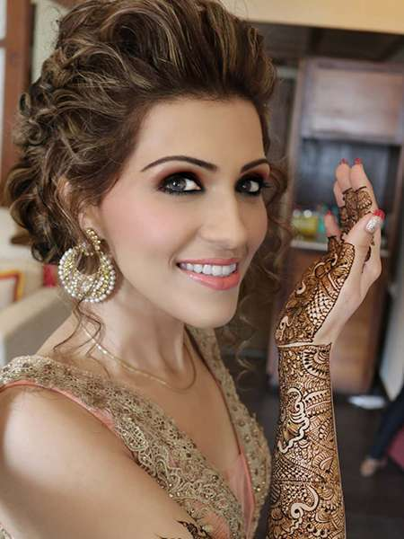
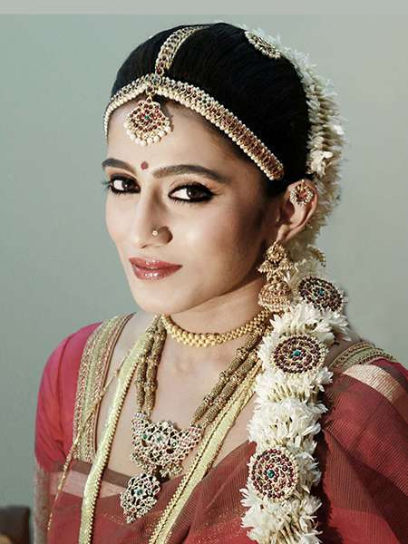
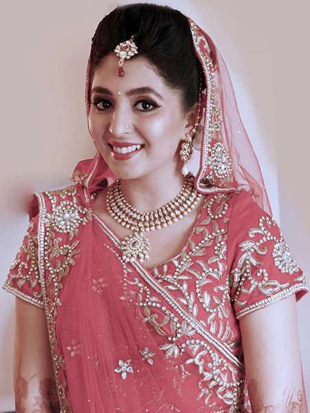
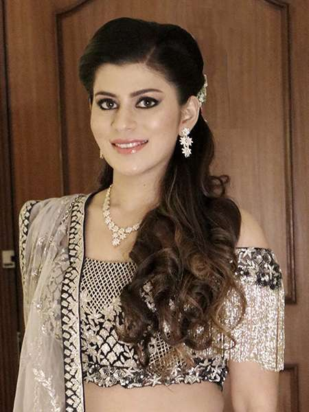
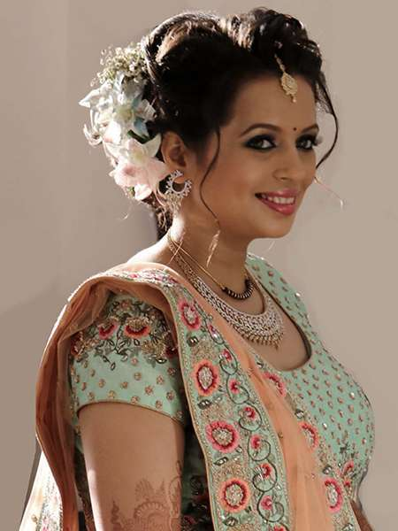
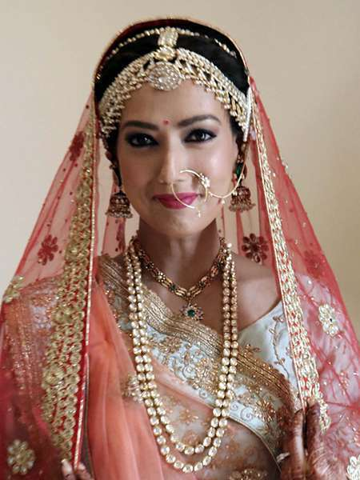
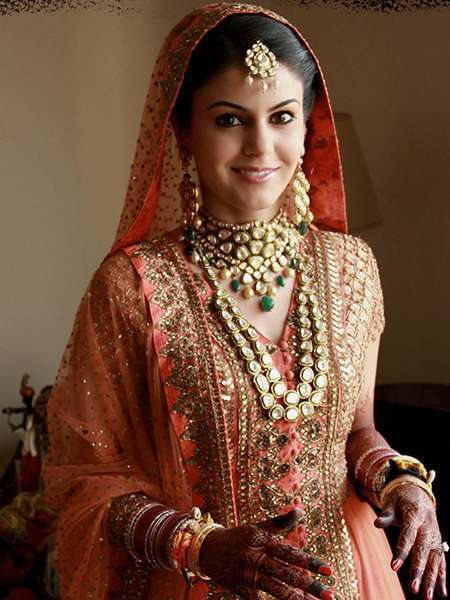
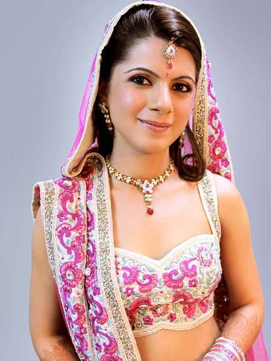

Art Work









Bharat and Dorris Godambe, the go to makeup artist and hairstylist of the tinsel town are the stalwarts of the Indian makeup Industry having contributed more than 30 years to it. Remember Deepika Padukone's iconic look in Om Shanti Om...okay 'nough said! A good makeup artist aims to make you look like a dream on your wedding day, giving you a makeover at your absolute best. They are a well known makeup artists and give the best services to their clients by understanding their needs and working accordingly.They believe in beauty being everywhere and they continue to enhance it. They extend their service to both the brides and their families. They believe in giving their clients a stunning transformation, and make them look like a dream on their wedding day. Their style is focused on giving a natural and elegant transformation by enhancing the features and not going overboard with makeup, giving their clients an experience worthy of a lifetime. Offering bridal makeup and hair, evening formal, day events and party makeup, engagement makeup, hairstyling and draping they are an ideal choice for your wedding as they keep in mind the latest styles and techniques while doing your makeover and make it a point to make your day as special as you. They also travel to your venue, making them a one stop solution for all wedding functions.
Services Provided